A Den Leader’s Field Guide to Advancement, Events &
Communication
Presented by Tyler Malone Assistant Cubmaster, Pack 3116
What We’ll Cover
01
Your Den
Logging in, finding your den on the roster, and filtering it
down.
02
Advancement
Status definitions, recording adventures for one Scout or the
whole den, and approvals.
03
Calendar
Creating den events with reminders, RSVP, and attendance.
04
Messaging
Emailing (and texting) just your den’s families.
Bring a laptopRoster and den editing is
desktop/laptop only right now — plan to do your Scoutbook
work at a computer, not on your phone.
Your Den
Logging in and finding your Scouts
Logging In
advancements.scouting.org
Sign in with your my.Scouting username and
password — the same account you use for YPT and
registration.
Open the Currently viewing pulldown in
the top right.
Select your Pack leadership position.
Pick the position you’re working as
TipIf you hold more than one role or
belong to more than one unit, that pulldown controls what you see.
Wrong menu options? Check it first.
Your Home Base: The Roster
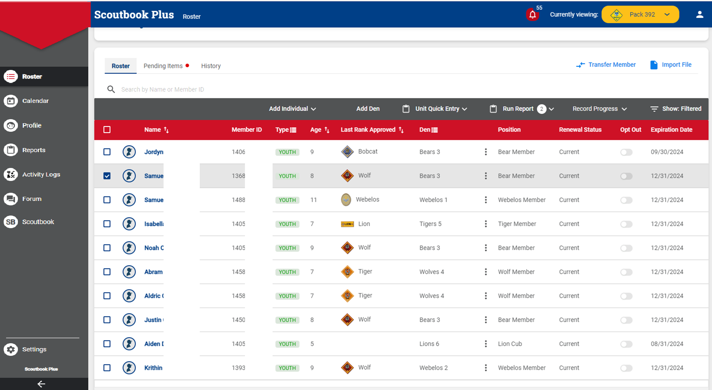
Left nav: Roster, Calendar, Reports · Toolbar: Unit Quick
Entry, Run Report, Show: Filtered
Finding Your Den on the Roster
Show your dens
Go to the Roster page.
Click the Den column heading to toggle
and display existing dens.
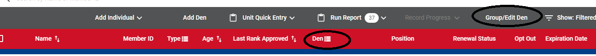
Filter to just your den
Click Show: Filtered on the right of
the toolbar.
Check your den, then Show Results.
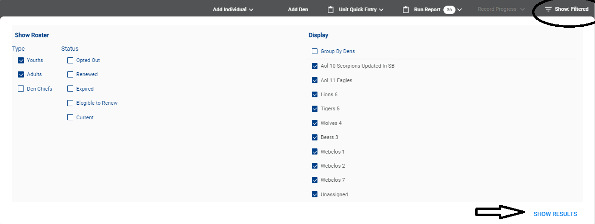
Heads upScouts must be
moved into a den before advancement can be
recorded. Missing a Scout? Ask your Cubmaster or Pack admin to move
them.
Advancement
Recording adventures and getting them approved
The Four Advancement Statuses
Started
Work is in progress.
Scout, parent, or leader
›
Completed
Marked done by the Scout or a parent/leader on their behalf.
Still needs leader sign-off.
Scout, parent, or leader
›
Approved
A leader verified it.
This is the official “earned” status.
Registered leaders only
›
Awarded
Optional. The approved item was physically presented to the
Scout.
Leaders · optional
Parents who aren’t registered leaders—and Scouts
themselves—can mark Completed but
cannot mark Approved.
Families can enter Completed items from Scoutbook or the
Scouting mobile app.
Marking an item Awarded removes it from open
Purchase Orders — coordinate with whoever buys your
pack’s loops and pins.
Checking a Scout’s Progress
On the Roster, click the Scout’s
name.
Their profile shows every rank with a progress bar.
Click View More on the current rank to
drill in.
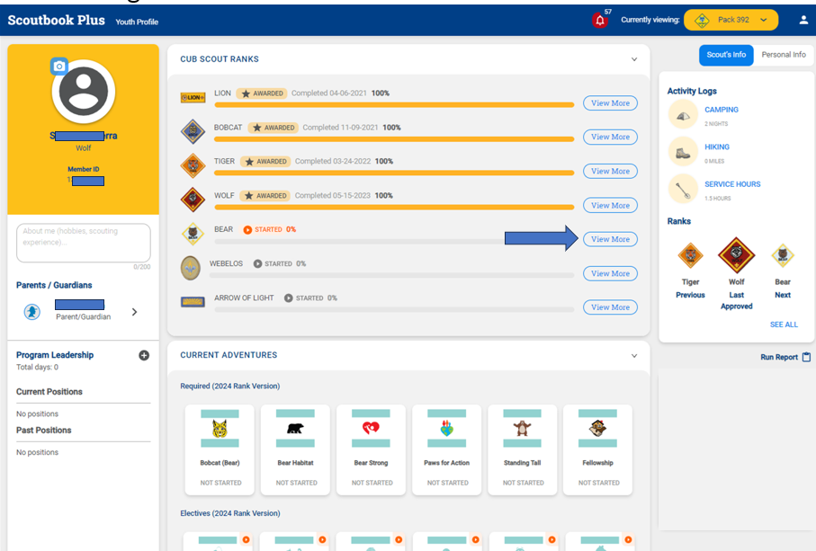
The arrow marks View More on the current rank
Inside a Rank
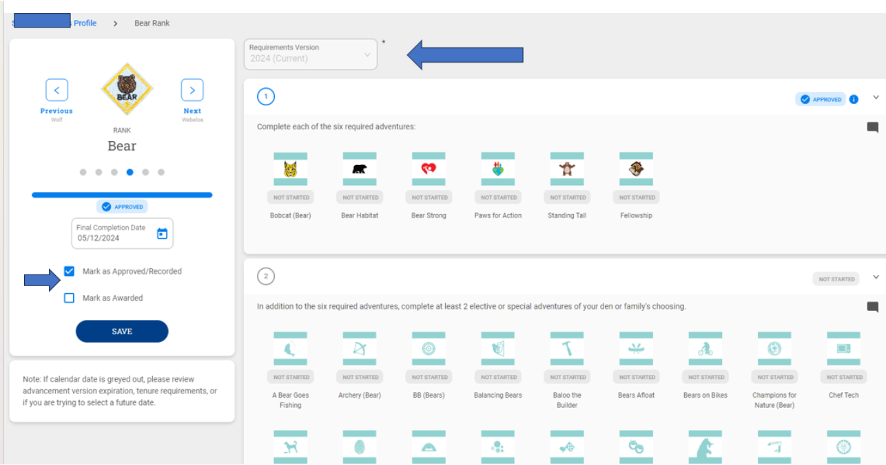
The six required adventures on top, electives below, each with
its status
Whole den at once?There’s currently
no single “den at a glance” progress
view. Go Scout by Scout, or run
Reports ›
Advancements ›
History ›
Quick Report.
One Scout: Individual Quick Entry
Best for a Scout who did an adventure at home or made up a
missed meeting.
Open the Scout’s adventure page.
Click Quick Entry (top right).
Check requirements under Complete or
Approve — Approve auto-checks
Complete.
Enter the date and click
Save.
TipLeaders can also back-fill
previous ranks — handy for transfers
or work that was never recorded.
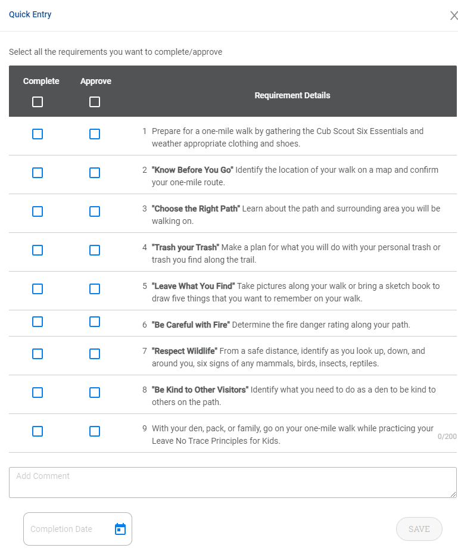
The Whole Den: Unit Quick Entry
Your after-meeting workhorse: record one adventure for every Scout
who was there.
From the Roster toolbar, open
Unit Quick Entry.
Choose Enter Adventures.
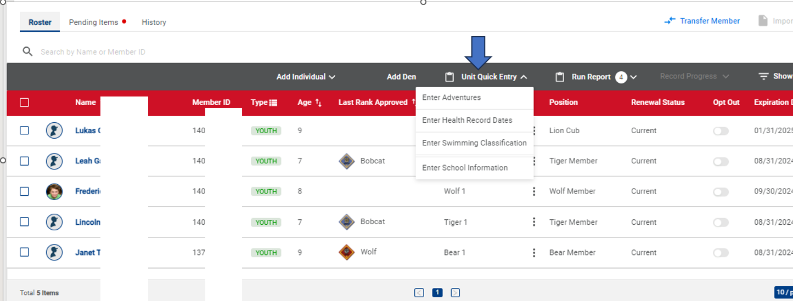
Heads upUnit Quick Entry only works for
Scouts who are in the correct den. Missing someone?
Check their den assignment.
Unit Quick Entry: Record & Approve
Select the Rank, Adventure,
and Version, then
Apply.
On the left, select the Scouts who did the
work.
On the right, select the requirements.
Enter the date, check
Mark as Approved (leaders only).
Click Apply.
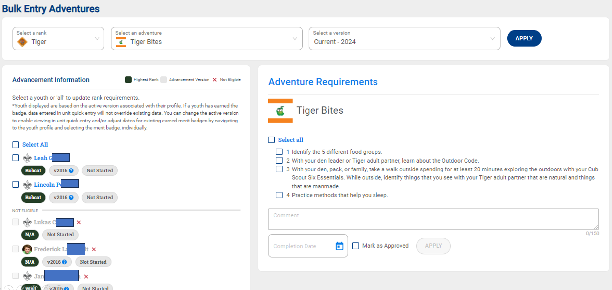
Approving What Families Submit
When parents mark work Completed at home, it waits
for you.
Click the Pending Items tab above the
Roster toolbar.
Review everything marked
Completed but not yet Approved.
Click into the Scout to verify and approve.
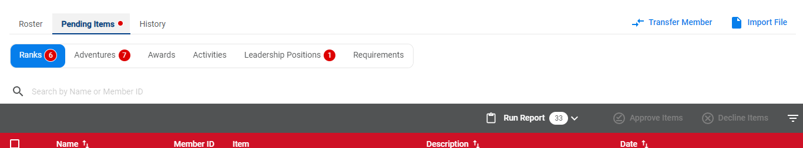
Make it a habitCheck Pending Items on a
regular schedule (say, the night before each den meeting) so
families see their Scout’s work acknowledged quickly.
Calendar & Events
Reminders, RSVPs, and attendance on autopilot
Creating a Den Event
One-time setup: set the unit’s
time zone under unit
Settings.
Click Calendar in the left nav.
Click a date, then the + icon (or the
general + and set the date yourself).
Choose which calendar(s) it appears
on — e.g., both the Pack and your Den.
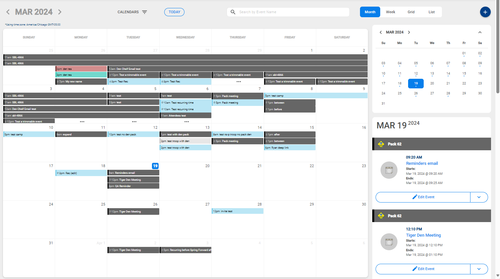
Month view · the blue + in the top right adds an
event
Event Details That Do the Work
Description is required and
visible to everyone.
Notes / Agenda / Minutes are
admin-only — a good home for your meeting plan.
Permission slip: optionally require the
standard form.
Location: add an address and map link.
Reminders: up to three, sent
automatically.
Attendees: add your den, plus outside guests.
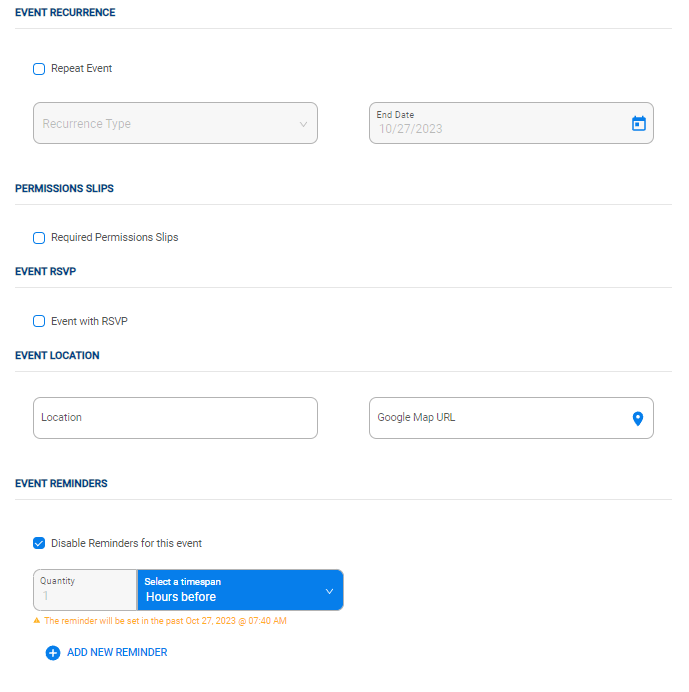
Collecting RSVPs
As the leader
Check Event with RSVP on the event.
Add attendees, or RSVP won’t work.
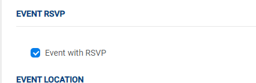
Track replies
Yes / No; non-responders show as Maybe.
Got a reply by text? Use
Quick Entry RSVP.
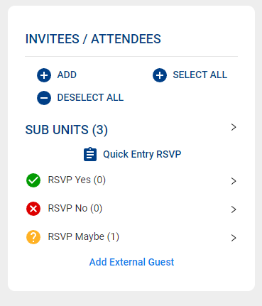
For families
Open the event; use the RSVP dropdown.
A Scout with a login can RSVP for
self and parents.
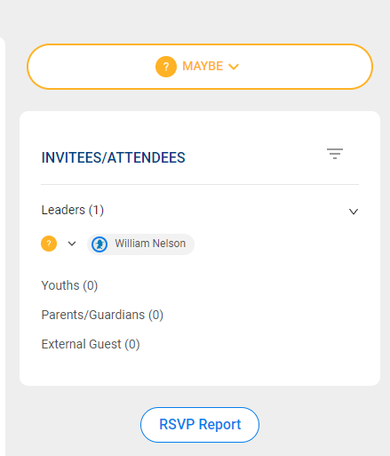
Your callScoutbook RSVP is optional.
Decide with your pack whether to use it, then tell families where to
reply.
After the Event: Attendance
After the event, invitees automatically become
“attended.”
Edit the list like you edited invitees:
remove no-shows,
add walk-ins.
Accurate attendance shows exactly
who needs a make-up.
Pair it upClean up attendance, then
run Unit Quick Entry for the Scouts who were
there. Same five minutes, both records done.
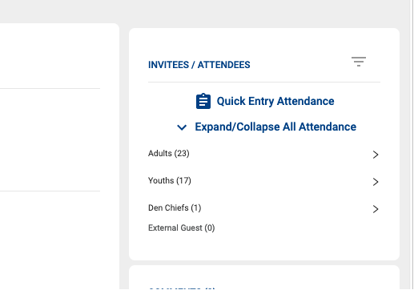
Messaging
Reaching just your den’s families
Emailing Your Den
Click Messaging in the left menu.
Click into your Den to message only that
group, or Select All for everyone.
Write in the WYSIWYG editor: bold, lists, and
links work as-is (no BBCode like legacy Scoutbook).
Send.
TextingWorks only for members whose
profile has a mobile number,
carrier, and the
opt-in box checked. Ask families to set it up
at the first meeting.
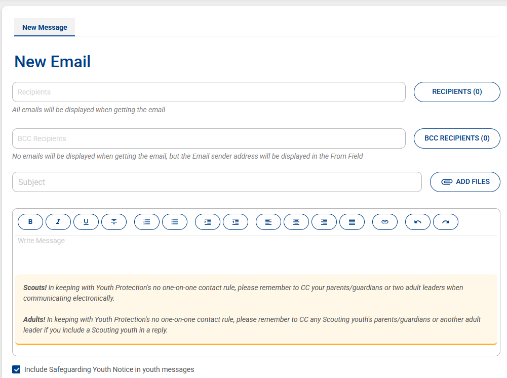
Putting It Together: A Den Leader’s Rhythm
When
In Scoutbook Plus
Start of year
Confirm every Scout is in your den; save your
roster filter; ask families to set up the Scouting app and
text opt-in.
Each month
Put the month’s meetings on the
Den calendar with reminders (and RSVP, if you use it); send
one organized message covering Den and Pack
activities.
Before a meeting
Check RSVPs and nudge the
“Maybes”; clear the
Pending Items tab.
After a meeting
Fix attendance, then
Unit Quick Entry › Approved for what
you covered.
Before Pack meeting
Hand your Advancement Chair an up-to-date den so awards can be
ordered.
 Pick the position you’re working as
Pick the position you’re working as